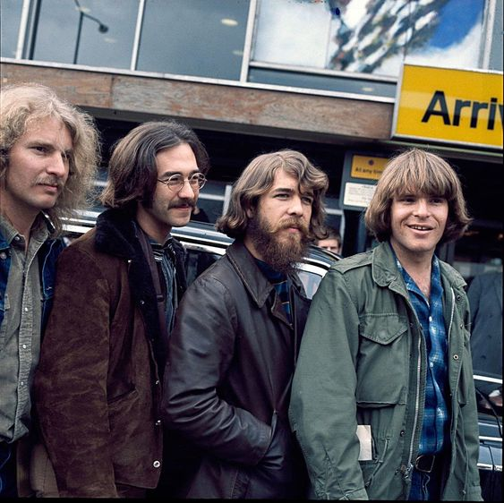

Referencias del género

-Janis Joplin-
Janis Lyn Joplin (Port Arthur, Jefferson, Texas; 19 de enero de 1943-Landmark Motor Hotel, Los Ángeles, California; 4 de octubre de 1970) fue una cantante estadounidense de rock y blues. Considerada por la crítica especializada una de las mejores y más influyentes artistas de todos los tiempos y la primera mujer estrella del rock and roll. Falleció a la edad de veintisiete años. Sus discos se encuentran entre los más vendidos dentro de la industria musical.
Canciones más escuchadas de Janis Joplin:
“Cry Baby - Janis Joplin”
“Maybe - Janis Joplin”
“Piece Of My Heart - Janis Jolin”
Referencias del género
